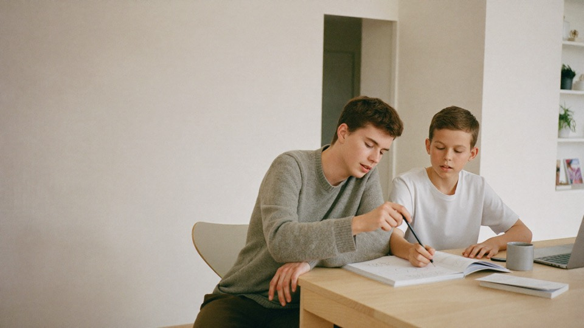
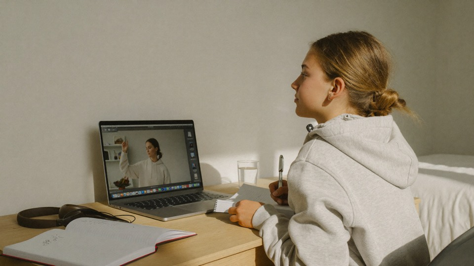

The first review from a parent will appear here.
Nextrum
By young people,
By young people,
for young people.
We create opportunities for young people to take their first steps into working life. At Nextrum you get the chance to work, grow and build experience — and at the same time we offer personal tutoring for students who want to develop and reach their goals.
Our idea
The right person can make
The right person can make
all the difference.
At Nextrum we match every student with one of our tutors, based on what the student needs and the subjects where support is wanted. Together they build better understanding, more motivation and greater confidence at school.
You get a personal study plan, can book sessions online or in person, and receive a structured report after every one. That way you can easily follow the student’s progress between sessions. We take care of matching, booking and planning — with no registration fee and no minimum term.
How we help young people
Every session is also someone’s first job. At Nextrum there are two ways into working life — and both give pay, responsibility and experience that counts.
Tutoring
As a tutor you help younger students with school. You decide when and how much you work, and build experience in explaining, planning and taking responsibility for someone else’s progress.
Sales
If you would rather work in sales, that path exists too. You learn to talk to people, take responsibility for your own results and see what your own drive delivers — experience that counts in almost every profession.
How Nextrum works
From first contact
From first contact
to the first session.
-
01
Get started
Tell us what the student needs help with, which year group and which subjects. It takes about two minutes.
-
02
We get in touch
We go through the need together with you before any matching is done.
-
03
Matching
We select the tutor who suits the student best — based on subject, level, need and personality.
-
04
Study plan and booking
We draw up an individual study plan for the student and you book your sessions.
-
05
Follow-up
After each session you get a report and access to extra digital exercises.
-
By young people, for young people
Our tutors are young themselves and know what school is like today.
-
Personal matching
We match the student on subject, level, need and personality.
-
Safe and simple
We handle matching, booking, payment and follow-up.
-
Results you notice
The student gains understanding, confidence and study habits — not just help with today’s homework.
Some of the people who help
Meet some of our tutors.
Our tutors are young, committed and recently took the same courses themselves. They know what it feels like to revise for a test, get stuck on a problem and try to understand something for the first time.
Loading tutors
Safe help, personal support
Safe help.
Safe help.
Personal support.
At Nextrum every student gets support shaped around what they actually need. We match the student with the right tutor, write a personal study plan and follow up every session so the student keeps taking the next step.
-
Personal tutoring
One tutor, one student, one plan. No group and no template.
-
Matching we stand behind
You do not browse a catalogue. We choose, because the wrong match is worse than no match.
-
Flexible
Online or in person, and you switch between the two from session to session.
-
Everything in one place
Booking, messages and payment in the platform — nothing scattered across apps.
-
Progress you can follow
The study plan, the sessions and the report after each one — collected in the student view.
-
Safety at every step
Vetted tutors, payment through Nextrum and follow-up after sessions.
The student view
You see what is happening.
Through Nextrum’s student view, student and parent can follow progress, see the study plan, book sessions and read the feedback — all in one place.
A
Week 12
Student viewMatched tutor
The student’s progress Last 6 weeks
Maths78%
Swedish64%
English52%
Upcoming sessions
Tue 16:00EquationsOnline
Thu 17:00Test revisionIn person
Sun 14:00Text analysisOnline
Study plan
Goal: confident with equations before the test in week 14. We cover one type of problem per session and finish with revision.
MathsYear 8
Latest report Sent after the session
We revised equations with brackets. It was slow going at first but clicked towards the end — they solved the last three problems on their own. For next time: problems 12–18 in the book.
YesterdaySession completedReport done
Illustration of the student view — the content is an example
In practice
This is what a session can look like.


Every student starts from a different place. With the right support, everyone can take the next step.
Nextrum

Safety
Safety first.
When young people help young people it has to be safe for everyone. That is why we build safety into every step, rather than checking afterwards.
Vetted tutors
Every tutor goes through Nextrum’s selection and vetting process.
Safe payment
Payment goes through Nextrum. Booking, session and invoice all connect, so what took place is always visible.
Secure communication
Communication takes place through the platform.
Quality assurance
We follow up sessions and collect feedback.
We are building the next generation together.

If you want to work with us
Want to help someone
Want to help someone
else succeed?
If you are at upper-secondary school or university you can become a tutor with us — and you do not have to be studying to work here. If you have finished school and are looking for work you are just as welcome. You help younger students with school, earn your own money and build experience that genuinely belongs on a CV.
- FlexibleYou decide when and how much you want to work.
- Paid for your timeBooking and payment are handled by Nextrum.
- Experience that countsCommunication, leadership and teaching — for real.
- You make a differenceSomeone younger will remember that you were the one who made it click.
Already a tutor? Log in
How applying works
01Apply
Fill in the application with subjects, year groups and times that suit you.
02Interview
A short conversation where we get to know you and how you explain things.
03Get approved
We run our checks and you get your tutor profile.
04Start working
Accept requests and hold your first session.
Voices
What do our users say?
We are right at the beginning. Our first families and tutors will also be the first to tell us about their experience. Until then we would rather show nothing than something invented.
The first review from a student will appear here.
The first review from a tutor will appear here.
Next step
Ready to take the next step?
For those who want to learn more. For those who want to help others.
- No minimum term
- Costs nothing to ask